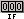
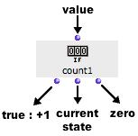

OpenMusic DocumentationHiérarchie de section : OM 6.6 User Manual > Visual Programming II > Iterations: OMLoop > Accumulators > Count
OpenMusic DocumentationHiérarchie de section : OM 6.6 User Manual > Visual Programming II > Iterations: OMLoop > Accumulators > Count
Navigation : page précédente | page suivante
Attention, votre navigateur ne supporte pas le javascript ou celui-ci à été désactivé. Certaines fonctionnalités de ce guide sont restreintes.
Count : Counting Items
 Count is a counter. Its internal value increases at each evaluation evaluated, if the input value is non nil.
Inputs and Outputs

|
Count has one default input and three outputs :
|
Examples
Counting the Items of a List
|

|
Counting Specific Items of a List
We will now apply count more specifically, to know how many strings a list contains among other types of items.

|
|
Références :
Plan :
Navigation : page précédente | page suivante
A propos...(c) Ircam - Centre Pompidou